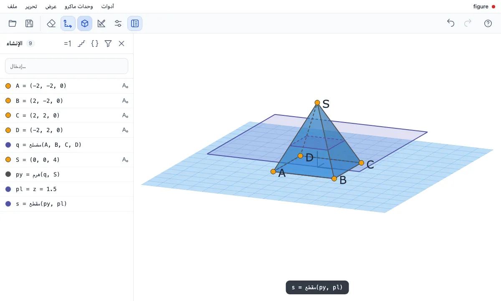

الأبعاد الثلاثة

الانتقال إلى الأبعاد الثلاثة
- الشكل الجديد مستوٍ. عرض ثلاثي الأبعاد يميل الكاميرا: يصبح مستوى الشكل الأرضية z = 0، والمَعلم ثلاثي سطوح. والضغطة الثانية تعيد إلى المستوى، مع المَعلم السابق.
-
تُرفض العودة إلى المستوى ما دام عنصر يخرج عن المستوى
z = 0؛ ويسمّيه الإرشاد. وبالعكس، يرفض الشكل المستوي
أي عنصر في الفضاء (
A = (1, 2, 3)، كرة…). - كل انتقال خطوة تراجع.
- أشكال DGPad ثلاثية الأبعاد، التي تقع نقاطها الحرة في مستوى الشاشة، ليس لها هذا الزر.
العرض
- التدوير: الزر الأيمن، أو إصبع واحد في مكان فارغ. التحريك: الزر الأيسر في مكان فارغ. التكبير: عجلة الفأرة.
- باعد بين إصبعين لتكبير الشكل وقرّبهما لتصغيره. اسحب الإصبعين معًا لتحريك العرض.
- P: المنظور أو الإسقاط المتوازي؛ S: الأرضية. والضبط نفسه في تبويب الشكل.
- الأجزاء المخفية (الأحرف، الدوائر، المستقيمات تحت الأرضية أو خلف وجه) تُرسم متقطعة.
الإنشاء
-
النقر في مكان فارغ ينشئ نقطة على الأرضية؛ وبلوحة المفاتيح
S = (0, 0, 4). - تكسب لوحة الأدوات عائلتي مستويات و مجسمات ودائرتين؛ وتقترح حلقة النقطة الكرة.
- تحوّل التماثلات والدورانات والتحاكيات والانسحابات أيضًا مستوى أو كرة أو متعدد سطوح (تحويل عنصر).
-
كل أداة تنتظر مستوى تقبل الأرضية: يُنشأ
مستوى مخفي
z = 0ثم يُعاد استعماله. -
تقرأ الصيغ الإحداثيات الثلاث:
d(A, B)هي المسافة في الفضاء.
| العنصر | الأمر |
|---|---|
| مستوى |
مستوى(A, B, C)،
مستوى(A, d)،
مستوىموازي(A, p)،
مستوىعمودي(A, d)،
p = x + y + z = 3
|
| عمودي على مستوى | عمودي(A, p) |
| كرة |
كرة(O, A)،
كرة(O, r)
|
| دوائر |
دائرة(d, P) محورها d؛
دائرة(O, r, d) عمودية على المستقيم
d أو موازية للمستوى d
|
| مجسمات |
أسطوانة(A, B, r)،
مخروط(A, B, r)،
مكعب(A, B, C)،
موشور(p, P)،
هرم(p, S)
|
| مقطع |
مقطع(s, p): دائرة أو قطع مخروطي أو
مضلع
|
| شبكة |
شبكة(c, f)، و f من 0 (مطوية) إلى 1
(مسطحة)
|
| تقاطعات |
تقاطع(d, p) نقطة،
تقاطع(p, q) مستقيم،
تقاطع(s, t) دائرة تقاطع كرتين
|
| رؤوس | رأس(c, k)، و k بدءًا من 1 |
المجسمات
- المجسم عنصر واحد: يرسم الوجوه والأحرف (متقطعة في الخلف) ويخفي ما وراءه. ويُحدَّد من داخل محيطه.
-
مكعب بنقرتين: نقطتان من مستوٍ أو مضلع واحد
تعطيان
مكعب(A, B, p, ±1)، من الجهة المواجهة للكاميرا؛ ونقطتان على الارتفاع نفسه تعطيانمكعب(A, B, 1)، فوقه (−1: تحته). وإلا تنتظر الأداة نقطة ثالثة. ويصبح المكعب غير معرّف إذا لم يعد [AB] موازيًا للمستوى. - تأخذ أداة مقطع المجسم والمستوى بأي ترتيب.
-
منزلقة كوسيط ثانٍ لـ
شبكةتحرّك الفتح:f = منزلقة(0, 1, 0)،n = شبكة(c, f).